Breakthrough with folding screen design
Samsung Galaxy Z Flip is designed with a folding screen design inspired by the Galaxy Fold product line that made a lot of noise in 2019.
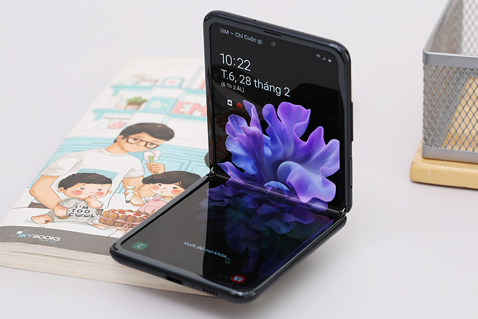
However, the difference is that the screen of the Z Flip is designed to fold vertically, making the overall machine can fit in the user's palm like a high-end fashion accessory.
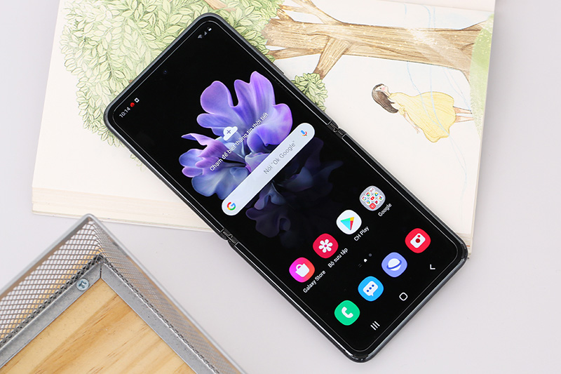
The hinge of the device is also capable of folding - opening with many different angles, when the device is in the half-opened state, the screen will automatically split into two 4-inch screens just enough for you to easily view the image. photos, content, or videos on the top half of the screen, and manipulate them on the bottom half.
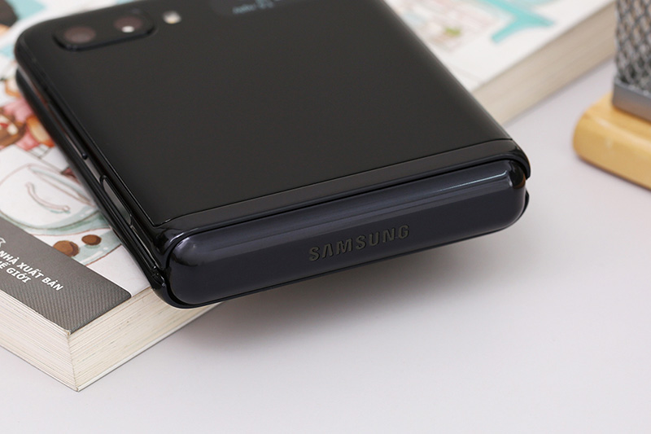
Experience using the Samsung Galaxy Z Flip flexibly thanks to its new modern hinge structure, which is more resistant to dust and dirt. Although there is still a fold between the Galaxy Z Flip screen, it does not affect the user experience at all.
Besides, this technology also allows the Samsung Galaxy Z Flip to be easily folded and opened with a durability of more than 200,000 times, opening a new decade of creativity for foldable phones.
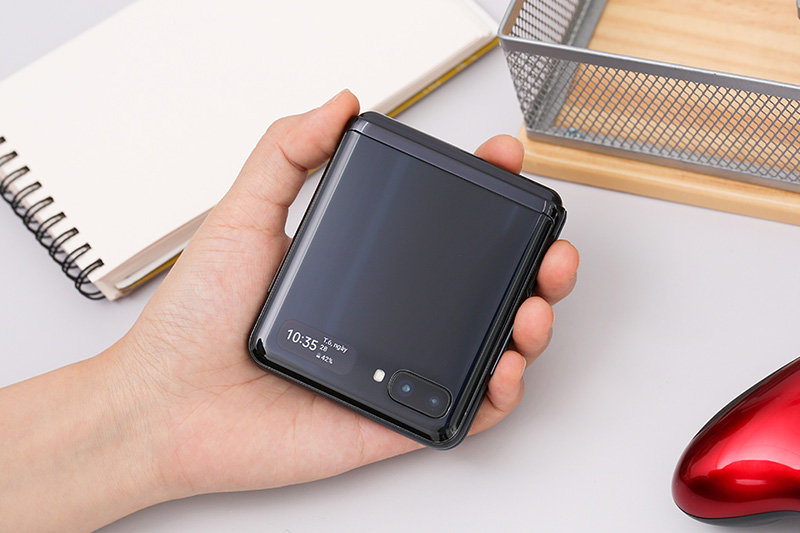
When fully opened, the screen of the device has a size of 6.7 inches, this is the world's first glass clamshell folding screen with an edge-to-edge screen design with a hole-punch camera.
Galaxy Z Flip owns an Infinity Flex screen with Samsung's unique Ultra Thin Glass (UTG) flexible glass technology, which makes the device thinner, giving it a luxurious and premium grip.
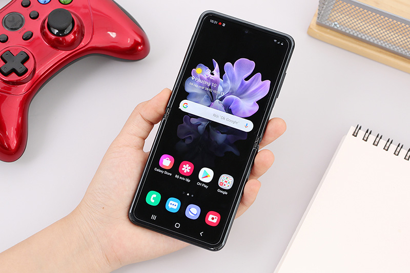
Using Dynamic AMOLED panels with Full HD + resolution, the most unique 21.9: 9 screen ratio today, HDR10+ support makes each image you see vivid in every detail, sharp on every movement. True vivid colors.
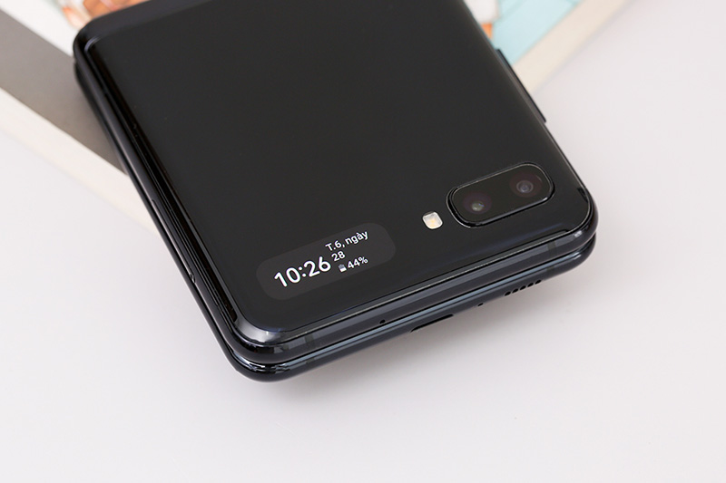
Samsung Galaxy Z Flip is equipped with dual cameras with 12 MP resolution with apertures of f/1.8 and f/2.2 respectively with OIS support for good low-light photography with photography technology. with gestures, easily capture every moment of everyday life.
AI recognition technology helps the machine to recognize many different subjects, thereby optimizing technical parameters to produce sharp, highly detailed images with vivid colors.
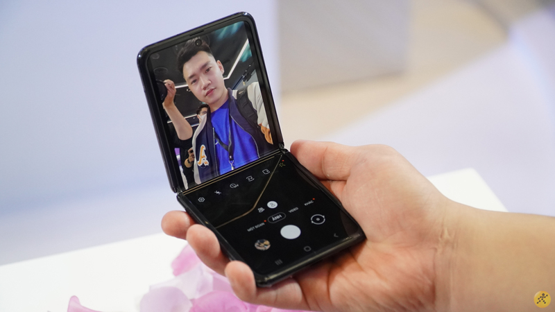
The front camera of the device has a resolution of 10 MP with an aperture of f2.4 arranged in a punch-hole in the center of the screen similar to that of the Galaxy S20, meeting the needs of taking selfies and recording videos with good quality.
Top performance with Snapdragon 855 Plus
Samsung Galaxy Z Flip is equipped with a powerful Snapdragon 855 Plus chip that comes with 8 GB of RAM and up to 256 GB of internal memory.
Although not as outstanding as the Samsung Galaxy S20 super product, it is still enough to ensure that the Z Flip always runs smoothly with heavy applications. This parameter is also among the top in the Android world in early 2020.
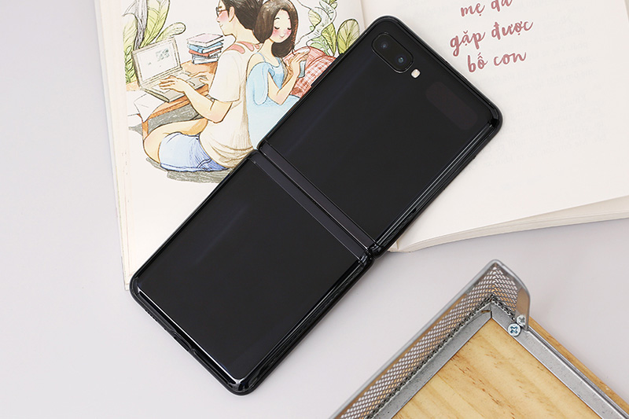
Samsung's folding screen machine is equipped with UFS 3.0 internal memory that is rated for extremely fast speeds, comparable to SSDs on personal computers. Fast hard drive speed combined with powerful performance processor contributes to smoother and faster processing.
With the amount of equipment that Samsung Galaxy Z Flip owns, it easily helps the phone play good games from light to heavy games at max settings without any problems.
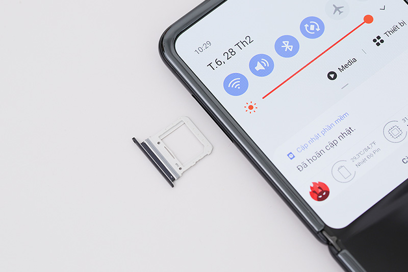
Galaxy Z Flip comes pre-installed with the customized Android 10 operating system on the latest OneUI 2.0 interface, and Samsung also optimizes the power interface for the folding, half-folding mode for users to experience a new and wonderful experience. than.
Good battery life with trendy wireless charging
Battery life is also the strong point of the Samsung Galaxy Z Flip when it is equipped with a large 3300 mAh battery, with support for 15W fast charging technology to significantly reduce the time it takes to fully charge the device.
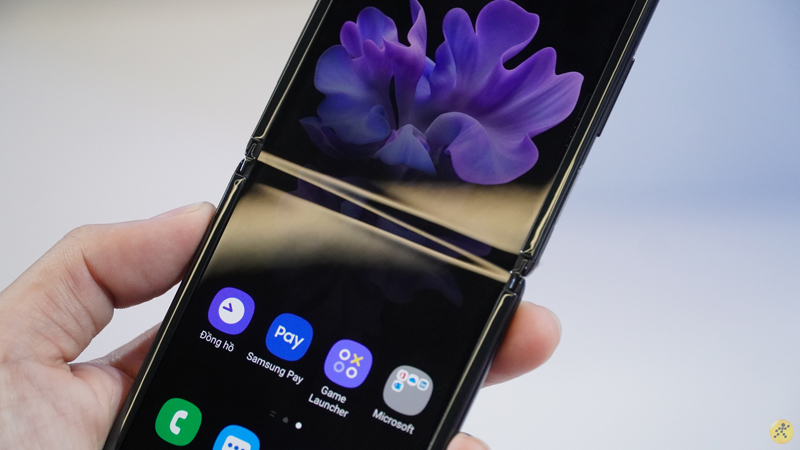
Besides, Galaxy smartphones are also equipped with modern wireless charging technology, quite convenient and neat, without having to worry about breaking wires or leaking electricity like other traditional charging methods.
The fingerprint sensor of the device is located on the side, not integrated inside the screen, in return, the device has the ability to quickly and accurately identify as well as higher security than the fingerprint sensor in the screen.
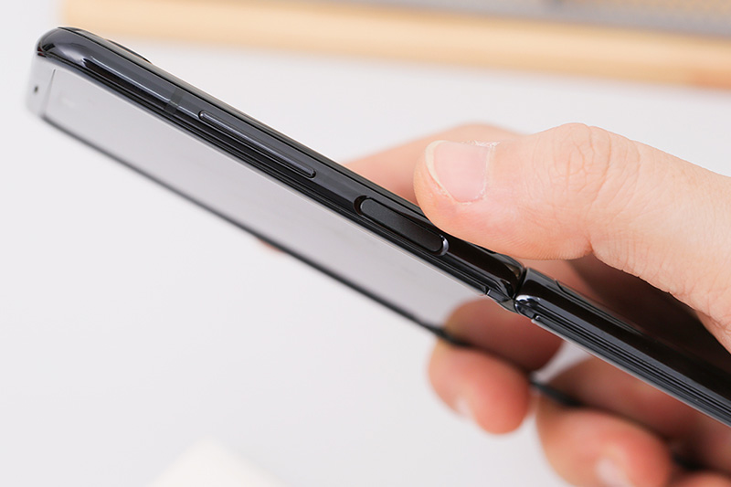
New S Pen, upgraded with many features
The S Pen on the Galaxy Note 20 Ultra has a change to the left position instead of the right as before, the delay is reduced many times compared to its predecessor, providing a smoother experience. The S Pen still has features such as remote smart gesture support, handwriting-to-text conversion, quick screenshots, etc.
Not only has the feature to operate independently like on the Galaxy Note 10, the S Pen on the Note 20 Ultra has also been upgraded to be able to interact with virtual reality directly, control gestures more intelligently thanks to a complete series of sensors. newly applied by Samsung this year.
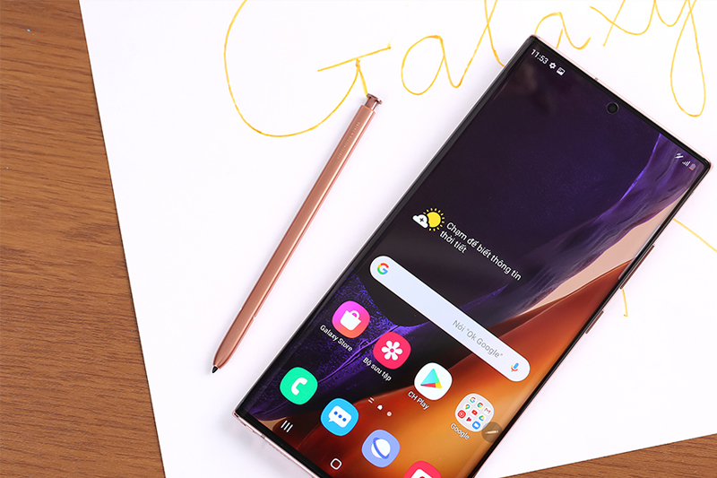
Unique camera, from design to features
Note 20 Ultra with image sensor upgrades, the main camera has a resolution of up to 108 MP with Laser AF, overcoming the limitations in focusing in previous Note lines.

The telephoto camera has a resolution of 12 MP with a maximum telephoto zoom of up to 50x, the super wide-angle camera has a resolution of 12 MP, this is a sensor for the ability to take artistic landscape photos with an angle. wider than ever.
Large capacity battery, for all-day experience
Owning a large 4500 mAh battery, Note 20 Ultra gives users a long time to use, besides the device also supports 25w fast charging technology to help shorten the charging time to a minimum.
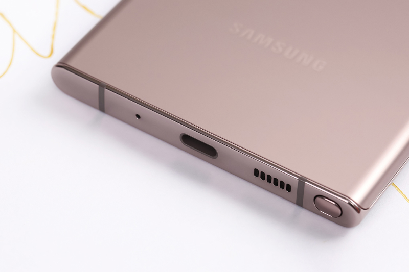